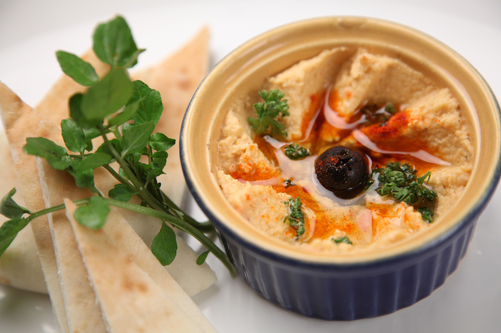

Quick Hummus Recipe
This recipe makes quick, tasty hummus, with no mess. It has been adapted from a number of different recipes that I have read over the years.
Hummus is a delicious thick paste used heavily in Greek and Middle Eastern dishes. It is very tasty with salad, grilled meats and pitta breads.

Ingredients
Instructions
- Remove the skin from the garlic, and chop coarsely
- Remove all the seeds and stalk from the pepper, and chop coarsely
- Add all the ingredients into a food processor
- Process all the ingredients into a paste
- If you want a coarse "chunky" hummus, process it for a short time
- If you want a smooth hummus, process it for a longer time
For a different flavour, you could try blending in a small measure of lemon and coriander, chili pepper, lime and chipotle, harissa and mint, or spinach and feta cheese.
Experiment and see what works for you.
Storage
Refrigerate the finished hummus in a sealed container. You should be able to use it for about a week after you've made it. If it starts to become fizzy, you should definitely discard it.
Hummus is suitable for freezing; you should thaw it and use it within a couple of months.